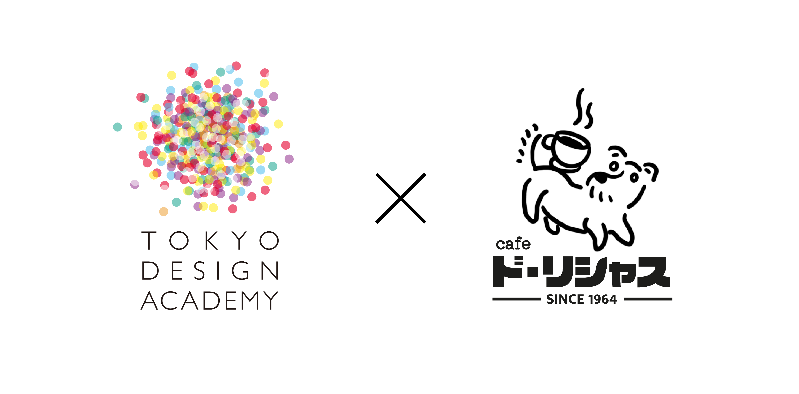
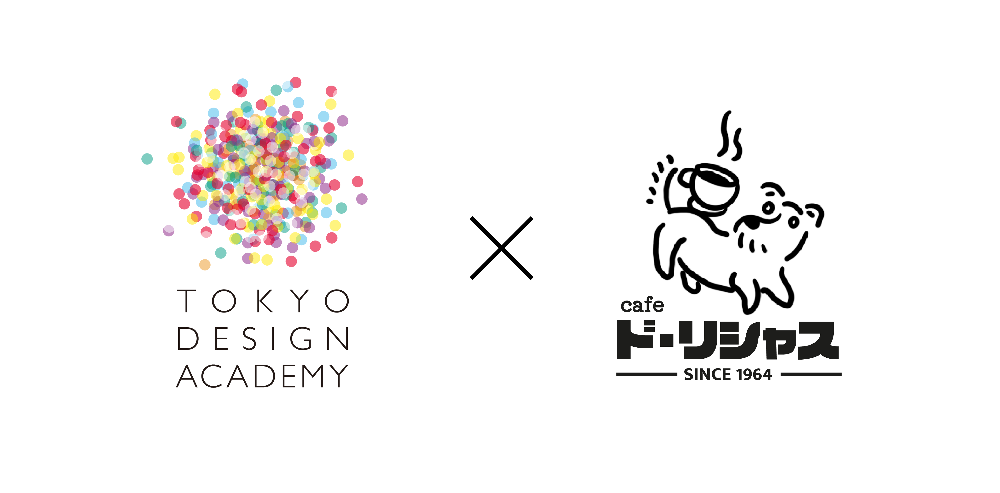

CAMPAIGN
キャンペーン

2023年 09月 25日
リニューアルオープン記念 TDA X cafe・ド・リシャス 作品展
cafe・ド・リシャスは2023年9月27日、リニューアルオープンされます。 リニューアルオープンを記念し、東京デザイン専門学校(TDA)グラフィックデザイン科とコラボを行う予定です。 イベント期間内にはカフェの一部のスペースを使い、学生たちの作品を展示する予定です。

2023年 09月 25日
リニューアルオープン記念 TDA X cafe・ド・リシャス 作品展
cafe・ド・リシャスは2023年9月27日、リニューアルオープンされます。 リニューアルオープンを記念し、東京デザイン専門学校(TDA)グラフィックデザイン科とコラボを行う予定です。 イベント期間内にはカフェの一部のスペースを使い、学生たちの作品を展示する予定です。